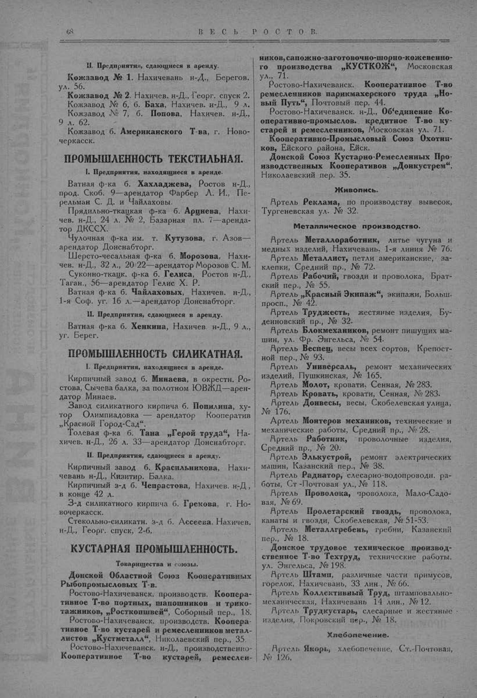

Лист источника 118
Скан

Распознанный текст
68 В Е С Ь Р О С Т О В.
II. Предприятия, сдающиеся в аренду.
Кожзавод № 1. Нахичевань н-Д., Берегов.
ул. 56.
Кожзавод № 2. Нахичев. н-Д., Георг. спуск 2.
Кожзавод № 6, б. Баха, Нахичев. н-Д., 9 л.
Кожзавод № 7, б. Попова, Нахичев. н-Д.,
9 л. 62.
Кожзавод б. Американского Т-ва, г. Ново-
черкасск.
ПРОМЫШЛЕННОСТЬ ТЕКСТИЛЬНАЯ.
I. Предприятия, находящиеся в аренде.
Ватная ф-ка б. Хахладжева, Ростов н-Д.,
прод. Скоб. 9—арендатор Фарбер Л. И., Пе-
рельман С. Д. и Чайлаховы.
Прядильно-ткацкая ф-ка б. Ардиева, Нахи-
чев. н-Д., 24 л. № 2, Базарная пл. 7—аренда-
тор ДКСCX.
Чулочная ф-ка им. т. Кутузова, г. Азов—
арендатор Донснабторг.
Шерсто-чесальная ф-ка б. Морозова, Нахи-
чев. н-Д., 32 л., 20/22—арендатор Морозов С. М.
Суконно-ткацк. ф-ка б. Гелиса, Ростов н-Д.,
Таган., 56—арендатор Гелис Х. Р.
Ватная ф-ка б. Чайлаховых, Нахичев. н-Д.,
1-я Соф. уг. 16 л.—арендатор Донснабторг.
II. Предприятия, сдающиеся в аренду.
Ватная ф-ка б. Хенкина, Нахичев. н-Д., 9 л.,
уг. Берег.
ПРОМЫШЛЕННОСТЬ СИЛИКАТНАЯ.
I. Предприятия, находящиеся в аренде.
Кирпичный завод б. Минаева, в окрестн. Ро-
стова, Сычева балка, за полотном ЮВЖД—арен-
датор Минаев.
Завод силикатного кирпича б. Попилина, ху-
тор Олимпиадовка — арендатор Кооператив
„Красной Город-Сад“.
Толевая ф-ка б. Тана „Герой труда“, На-
хичев. н-Д., 26 л. 33—арендатор Донснабторг.
II. Предприятия, сдающиеся в аренду.
Кирпичный завод б. Красильникова, Нахи-
чевань н-Д., Кизитир. Балка.
Кирпичный з-д б. Чепрастова, Нахичев. н-Д,
в конце 42 л.
З-д силикатного кирпича б. Грекова, г. Но-
вочеркасск.
Стекольно-силикатн. з-д б. Ассеева. Нахичев.
н-Д., Георг. спуск, 2-б.
КУСТАРНАЯ ПРОМЫШЛЕННОСТЬ.
Товарищества и союзы.
Донской Областной Союз Кооперативных
Рыбопромысловых Т-в.
Ростово-Нахичеванск. производств. Коопера-
тивное Т-во портных, шапошников и трико-
тажников, „Росткопшвей“, Соборный пер., 18.
Ростово-Нахичеванск. производств. Коопера-
тивное Т-во кустарей и ремесленников метал-
листов „Кустметалл“, Николаевский пер., 35.
Ростово-Нахичеванск. н-Д., производственно-
Кооперативное Т-во кустарей, ремеслен-
ников, сапожно-заготовочно-шорно-кожевенно-
го производства „КУСТКОЖ“, Московская
ул., 71.
Ростово-Нахичеванск. Кооперативное Т-во
ремесленников парикмахерского труда „Но-
вый Путь“, Почтовый пер. 44.
Ростово-Нахичеванск. н-Д., Об'единение Ко-
оперативно-промыслов. кредитное Т-во ку-
старей и ремесленников, Московская ул. 71.
Кооперативно-Промысловый Союз Охотни-
ков, Ейского района, Ейск.
Донской Союз Кустарно-Ремесленных Про
изводственных Кооперативов „Донкустрем“,
Николаевский пер. 35.
Живопись.
Артель Реклама, по производству вывесок,
Тургеневская ул. № 32.
Металлическое производство.
Артель Металлоработник, литье чугуна и
медных изделий, Нахичевань, 1-я линия № 76.
Артель Металлист, петли американские, за-
клепки, Средний пр., № 72.
Артель Рабочий, гвозди и проволока, Брат-
ский пер., № 55.
Артель „Красный Экипаж“, экипажи, Больш.
просп., № 42.
Артель Труджесть, жестяные изделия, Бу-
денновский пр., № 32.
Артель Блокмехаников, ремонт пишущих ма-
шин, ул. Фр. Энгельса, № 54.
Артель Веспец, весы всех сортов, Крепост-
ной пер., № 93.
Артель Универсаль, ремонт механических
изделий, Пушкинская, № 165.
Артель Молот, кровати, Сенная, № 283.
Артель Кровать, кровати, Сенная, № 283.
Артель Донвесы, весы, Скобелевская улица,
№ 176.
Артель Монтеров механиков, технические и
механические работы, Средний пр., № 28.
Артель Работник, проволочные изделия,
Средний пр., № 20.
Артель Элькустрой, ремонт электрических
машин, Казанский пер., № 38.
Артель Радиатор, слесарно-водопроводн. ра-
боты, Ст-Почтовая ул., № 118.
Артель Проволока, проволока, Мало-Садо-
вая, № 69.
Артель Пролетарский гвоздь, проволока,
канаты и гвозди, Скобелевская, № 51-53.
Артель Металлгребень, гребни, Казанский
пер., № 18.
Донское трудовое техническое производ-
ственное Т-во Техтруд, технические работы.
ул. Энгельса, № 198.
Артель Штамп, различные части примусов,
горелок, Нахичевань, 33 лин., № 66.
Артель Коллективный Труд, штамповально-
механическая, Нахичевань 14 лин., № 12.
Артель Трудкустарь, слесарные и жестяные
изделия, Покровский пер., № 18.
Хлебопечение.
Артель Якорь, хлебопечение, Ст.-Почтовая,
№ 126.